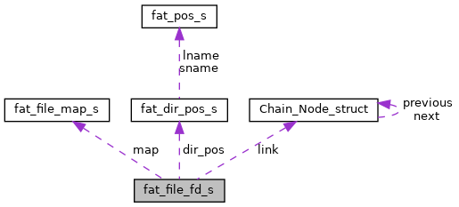

|
RTEMS
5.0.0
|
|
RTEMS
5.0.0
|
Descriptor of a fat-file. More...
#include <fat_file.h>

Data Fields | |
| rtems_chain_node | link |
| uint32_t | links_num |
| uint32_t | ino |
| fat_file_type_t | fat_file_type |
| uint32_t | size_limit |
| uint32_t | fat_file_size |
| uint32_t | cln |
| fat_dir_pos_t | dir_pos |
| uint8_t | flags |
| fat_file_map_t | map |
| time_t | ctime |
| time_t | mtime |
Descriptor of a fat-file.
To each particular clusters chain
Definition at line 73 of file fat_file.h.
| uint32_t fat_file_fd_s::cln |
Definition at line 88 of file fat_file.h.
Referenced by fat_file_size(), fat_file_write_first_cluster_num(), msdos_find_name(), and msdos_get_dotdot_dir_info_cluster_num_and_offset().
| time_t fat_file_fd_s::ctime |
Definition at line 92 of file fat_file.h.
Referenced by msdos_dir_stat(), msdos_file_stat(), and msdos_find_name().
| fat_dir_pos_t fat_file_fd_s::dir_pos |
Definition at line 89 of file fat_file.h.
Referenced by msdos_find_name(), msdos_rename(), and msdos_rmnod().
| uint32_t fat_file_fd_s::fat_file_size |
Definition at line 87 of file fat_file.h.
Referenced by fat_file_extend(), fat_file_read(), fat_file_size(), fat_file_truncate(), fat_file_write(), msdos_dir_stat(), msdos_file_ftruncate(), msdos_file_stat(), msdos_find_name(), and msdos_find_node_by_cluster_num_in_fat_file().
| fat_file_type_t fat_file_fd_s::fat_file_type |
Definition at line 85 of file fat_file.h.
Referenced by msdos_find_name(), msdos_get_dotdot_dir_info_cluster_num_and_offset(), and msdos_rmnod().
| uint8_t fat_file_fd_s::flags |
Definition at line 90 of file fat_file.h.
| uint32_t fat_file_fd_s::ino |
Definition at line 84 of file fat_file.h.
Referenced by msdos_dir_stat(), and msdos_file_stat().
| rtems_chain_node fat_file_fd_s::link |
Definition at line 75 of file fat_file.h.
| uint32_t fat_file_fd_s::links_num |
Definition at line 80 of file fat_file.h.
Referenced by fat_file_close(), fat_file_reopen(), msdos_find_name(), and msdos_rmnod().
| fat_file_map_t fat_file_fd_s::map |
Definition at line 91 of file fat_file.h.
Referenced by fat_file_size(), msdos_find_name(), and msdos_get_dotdot_dir_info_cluster_num_and_offset().
| time_t fat_file_fd_s::mtime |
Definition at line 93 of file fat_file.h.
Referenced by msdos_dir_stat(), msdos_file_stat(), and msdos_find_name().
| uint32_t fat_file_fd_s::size_limit |
Definition at line 86 of file fat_file.h.
Referenced by fat_file_write(), msdos_find_name(), and msdos_get_dotdot_dir_info_cluster_num_and_offset().
 1.8.17
1.8.17